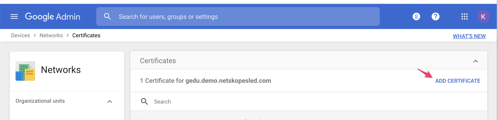
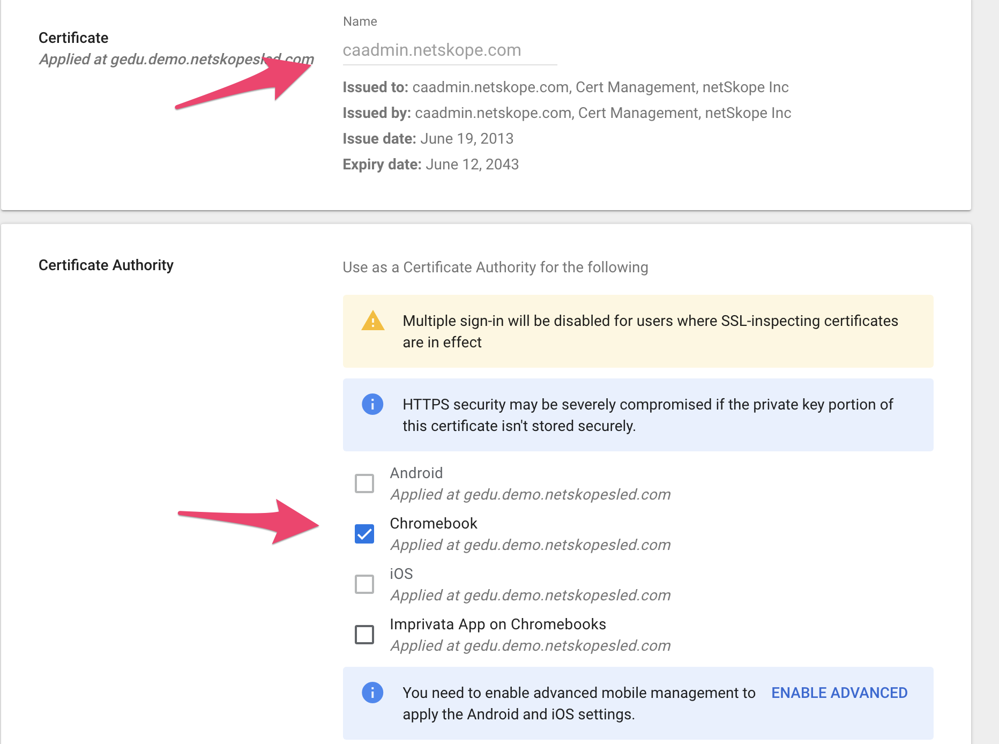
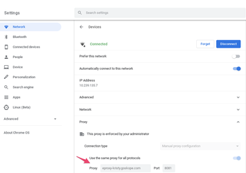
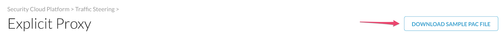

Configure Explicit Proxy for Managed Chromebook Devices
Install the Netskope certificates in Google, then choose method 1 or 2 to configure your proxy settings.
Install Certificates
Regardless of the method you choose you will need the Netskope root cert on end user devices. Luckily admin.google.com allows us to mass install this for managed devices.
In the Netskope UI, go to Settings > Manage > Certificates >Signing CA and download all 3 certificates (this will ensure decryption works whether or not you have an IP whitelisted in the tenant):

In admin.google.com , go to Devices > Networks and click Certificates > Add Certificate to add each cert one at a time.
 Upload the Netskope Root Certificate, enable Chromebook in the Certificate Authority section, and then click Save. This certificate will be automatically pushed to all managed ChromeOS devices.

Method 1: Configure Proxy Settings in the Google Admin Console
This method will work regardless of the Wifi Network/Browser a user tries to use on the ChromeOS device, but will ONLY work for Managed ChromeOS devices and not any other OS.
In admin.google.com, go to Devices > Chrome > Settings > User and in browser settings select Network. Under Proxy mode, changet to Always use the proxy specified below. For Proxy Server URL, copy the URL from your Netskope tennant under Settings > Security Cloud Platform > Traffic Steering > Explicit Proxy. Be sure to remove
https://. Leave everything else default:
If any URLs need to be bypassed from being sent to the proxy, add them here. IP addresses and CIDR blocks also work. You’ll also need to add bypasses for the SSO of your choice, accounts.google.com works for Google SSO.
These are the suggested bypasses for ChromeOS:
client1.google.com client2.google.com client3.google.com client4.google.com client5.google.com client6.google.com commondatastorage.googleapis.com cros-omahaproxy.appspot.com dl-ssl.google.com dl.google.com gweb-gettingstartedguide.appspot.com m.google.com hangouts.google.com omahaproxy.appspot.com pack.google.com safebrowsing-cache.google.com safebrowsing.google.com ssl.gstatic.com storage.googleapis.com tools.google.com www.googleapis.com ww.gstatic.com play.google.com mtalk.google.com accounts.google.com
 When done adding bypasses, wait a few minutes, then on your ChromeOS device, check under Settings > Network. Click on your Wifi Network and you should see the proxy settings.
Visit some Google cloud apps, and then you should see the Access Method as Explicit Proxy in SkopeIT details in your Netskope tenant.

Method 2: Configure a Hosted PAC File
The Google Admin console only supports hosted PAC files. Netskope plans to support this option in the tenant in a later release. For now you can host it on a 3rd-party site.
In your Netskope tenant, go to Settings > Security Cloud Platform > Traffic Steering > Explicit Proxy and click Download Sample PAC File:
 A file called
sample.pacwill be downloaded. Open this file in a text editor of your choice, and use this file as a template to create a new PAC file that will steer traffic.Substitute domain-example1.com and domain-example2.com with the exceptions (bypassed sites) you need. This will allow the endpoint to reach Okta for authentication directly and not be sent via Cloud Explicit Proxy. This is not a requirement, but is done to illustrate how a PAC file is used to send some traffic directly and other traffic to the Cloud Explicit Proxy.
Substitute
proxy-<tenant-name>.goskope.comwith your tenant name and save your changes: